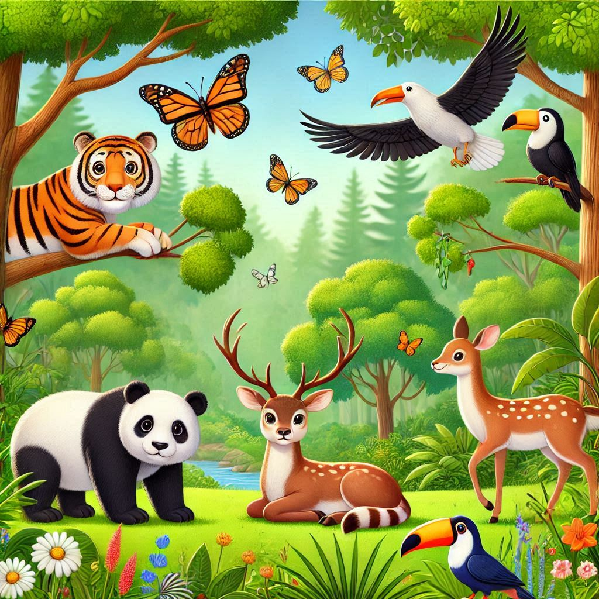
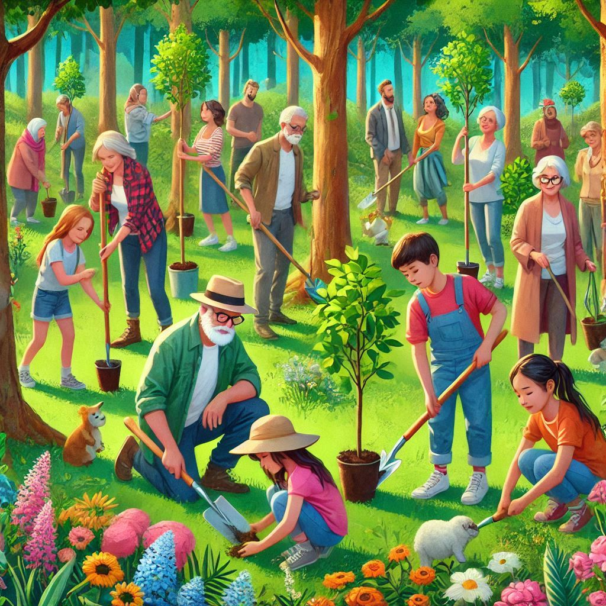

Iniciativas Ecológicas
Reciclaje y Reutilización

Aprende las mejores prácticas para reciclar y reutilizar materiales en tu hogar y comunidad. Únete a nuestros talleres mensuales y sé parte del cambio.
Huertos Urbanos

Descubre cómo puedes comenzar tu propio huerto urbano. Participa en nuestros proyectos comunitarios y cultiva tus propios alimentos frescos y orgánicos.
Movilidad Sostenible

Infórmate sobre alternativas de transporte que reducen tu huella de carbono. Desde bicicletas eléctricas hasta carpooling, encuentra la opción que mejor se adapte a ti.
Conservación de Agua

Aprende técnicas para conservar agua en tu hogar y jardín. Únete a nuestros seminarios y talleres para conocer más sobre el uso eficiente de este recurso vital.
Energías Renovables

Explora las diferentes formas de energías renovables y cómo puedes integrarlas en tu vida diaria. Participa en nuestros eventos y conoce más sobre paneles solares y energía eólica.
Limpieza de Playas

Únete a nuestras campañas de limpieza de playas y costas. Ayuda a mantener nuestros océanos limpios y protege la vida marina participando en estos eventos regulares.
Compostaje Doméstico

Aprende a convertir tus desechos orgánicos en abono para tu jardín. Nuestros talleres de compostaje te guiarán en cada paso del proceso.
Protección de la Fauna
Participa en iniciativas para proteger y conservar la fauna local. Colabora con expertos y voluntarios en proyectos de conservación de especies en peligro.
Reforestación
Únete a nuestras campañas de reforestación y ayuda a plantar árboles en áreas degradadas. Contribuye a la recuperación de bosques y ecosistemas.
Educación Ambiental

Participa en programas de educación ambiental que buscan crear conciencia sobre la importancia de cuidar nuestro planeta. Talleres, charlas y más.
Viviendas Ecológicas

Conoce las últimas tendencias en construcción sostenible. Desde casas pasivas hasta tecnologías verdes, aprende cómo hacer tu hogar más ecológico.
Consumo Responsable

Infórmate sobre cómo puedes reducir tu huella ecológica a través de decisiones de consumo responsables. Compra productos locales y sostenibles.
Recuperación de Ecosistemas

Colabora en proyectos de restauración de ecosistemas dañados. Ayuda a restablecer el equilibrio natural en áreas afectadas por la actividad humana.
Uso de Materiales Sostenibles

Descubre cómo utilizar materiales sostenibles en tus proyectos personales y profesionales. Promueve el uso de recursos renovables y reciclados.
Moda Sostenible

Infórmate sobre marcas y productos de moda que priorizan la sostenibilidad. Aprende a tomar decisiones de compra que beneficien al medio ambiente.
Voluntariado Ambiental

Involúcrate en actividades de voluntariado que buscan proteger el medio ambiente. Contribuye con tu tiempo y esfuerzo en proyectos ecológicos.
Arte y Sostenibilidad

Explora cómo el arte puede ser una herramienta para promover la sostenibilidad. Participa en talleres y exposiciones de arte sostenible.
Construcción Sostenible
Aprende sobre prácticas de construcción que reducen el impacto ambiental. Descubre técnicas y materiales que hacen la construcción más ecológica.
Tecnología Verde

Infórmate sobre las últimas innovaciones tecnológicas que promueven la sostenibilidad. Desde energía solar hasta soluciones de ahorro energético.
Jardinería Sostenible

Descubre técnicas de jardinería que promueven la biodiversidad y la sostenibilidad. Aprende a crear espacios verdes en armonía con el medio ambiente.